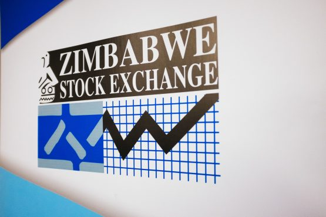

Stock Price prediction using LSTM on ZSE
A modified RNN that solves the vanishing gradient in LSTM using the three gates architecture.
View ProjectTransforming raw data into actionable insights through analytics, visualization and machine learning.
A Data Analyst dedicated to developing business intelligence solutions that leverage best practice technologies to deliver data-driven insights. With over 5 years of experience in data analytics and reporting, statistical analysis and business intelligence.
A modified RNN that solves the vanishing gradient in LSTM using the three gates architecture.
View ProjectPython web scraper, SQL Server storage, and Power BI visualization for housing market analysis.
View Project
SQL analysis of shipping costs, profit and discounts to optimize business operations.
View ProjectStreamlit app for the housing price prediction, continuation of project #2.
View AppFraud detection using Logistic Regression, Random Forest and Gradient Boosting on a class-imbalanced dataset.
View ProjectA comparative analysis of OLS and Polynomial regression in prediction.
View ProjectA basic python notebook analyzing Indian States covid-19 statistics.
View Project